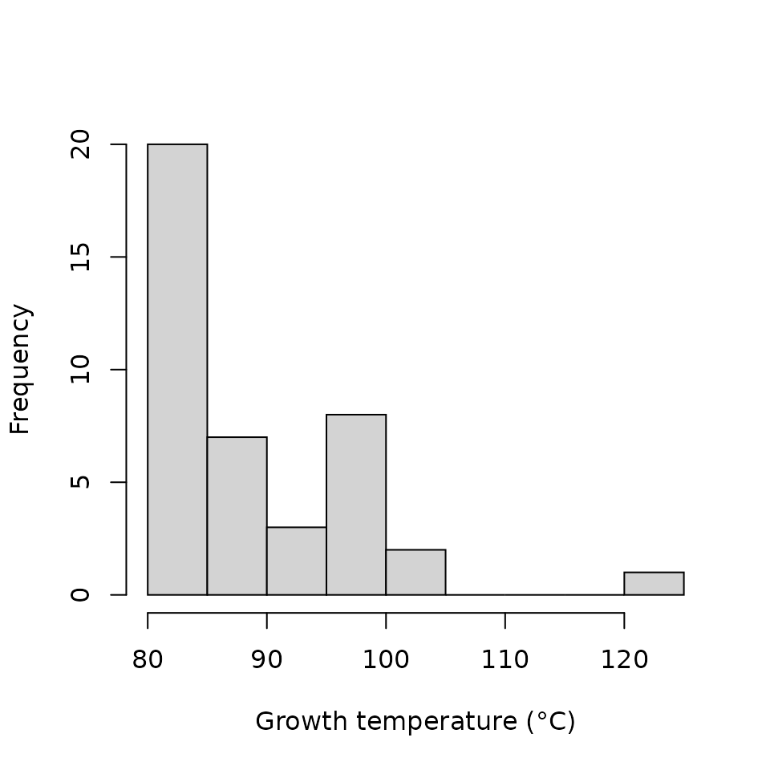

bugphyzz.RmdThe bugphyzz package provides the makeSignatures function, which allows to create lists of microbe signatures per attribute from a dataset imported with the physiologies or fattyAcidComposition functions. These lists of signatures can be used for enrichment analysis using other R packages, such as EnrichmentBrowser.
library(bugphyzz)
library(dplyr)
#>
#> Attaching package: 'dplyr'
#> The following objects are masked from 'package:stats':
#>
#> filter, lag
#> The following objects are masked from 'package:base':
#>
#> intersect, setdiff, setequal, unionThe first step to crate a list of signatures is to import a bugphyzz dataset. This dataset can have attributes with categorical (e.g. aerophilicity) or continuous values (e.g. growth temperature).
A dataset with attributes with categorical values:
aer <- physiologies("aerophilicity")[[1]]
#> Finished aerophilicity
glimpse(aer)
#> Rows: 2,557
#> Columns: 10
#> $ NCBI_ID <int> 6, 10, 16, 18, 20, 22, 59, 68, 71, 85, 93, 96, 99,…
#> $ Genome_ID <lgl> NA, NA, NA, NA, NA, NA, NA, NA, NA, NA, NA, NA, NA…
#> $ Accession_number <chr> NA, NA, NA, NA, NA, NA, NA, NA, NA, NA, NA, NA, NA…
#> $ Taxon_name <chr> "Azorhizobium", "Cellvibrio", "Methylophilus", "Pe…
#> $ Attribute <chr> "microaerophilic", "aerobic", "aerobic", "anaerobi…
#> $ Attribute_value <lgl> TRUE, TRUE, TRUE, TRUE, TRUE, TRUE, TRUE, TRUE, TR…
#> $ Attribute_source <chr> "Garrity, G.M., Winters, M. & Searles, D.B. 2001a.…
#> $ Evidence <chr> "EXP", "EXP", "EXP", "EXP", "EXP", "EXP", "EXP", "…
#> $ Confidence_interval <chr> "always", "always", "always", "always", "always", …
#> $ Note <lgl> NA, NA, NA, NA, NA, NA, NA, NA, NA, NA, NA, NA, NA…An dataset with an attribute with continuous values:
gt <- physiologies("growth temperature")[[1]]
#> Finished growth temperature
glimpse(gt)
#> Rows: 2,524
#> Columns: 9
#> $ Taxon_name <chr> "Acholeplasma laidlawii PG-8A", "Acidilobus saccha…
#> $ NCBI_ID <dbl> 441768, 666510, 349163, 243159, 240015, 351607, 43…
#> $ Genome_ID <chr> "Unknown", "Unknown", "Unknown", "Unknown", "Unkno…
#> $ Accession_number <chr> "NC_010163", "NC_014374", "NC_009467, NC_009468, N…
#> $ Attribute <chr> "growth temperature", "growth temperature", "growt…
#> $ Attribute_value <dbl> 37, 80, 35, 30, 30, 58, 70, 37, 37, 37, 37, 37, 37…
#> $ Attribute_source <chr> "http://bacmap.wishartlab.com/", "http://bacmap.wi…
#> $ Evidence <chr> "EXP", "EXP", "EXP", "EXP", "EXP", "EXP", "EXP", "…
#> $ Confidence_interval <chr> "Unknown", "Unknown", "Unknown", "Unknown", "Unkno…The makeSignatures function allows to create signatures at different taxonomic ranks and with different taxids.
Signatures with NCBI taxids at the genus level:
aer_sig <- makeSignatures(aer, taxids = "NCBI_ID", tax_rank = "genus")
lapply(aer_sig, head)
#> $aerobic
#> [1] "10" "16" "20" "59" "68" "71"
#>
#> $anaerobic
#> [1] "18" "96" "157" "279" "657" "816"
#>
#> $`facultatively anaerobic`
#> [1] "22" "146" "538" "541" "544" "547"
#>
#> $microaerophilic
#> [1] "6" "191" "963" "12960" "13134" "40544"
#>
#> $`obligately aerobic`
#> [1] "99" "123" "179" "222" "237" "338"
#>
#> $`obligately anaerobic`
#> [1] "146" "832" "836" "848" "864" "866"Signatures with taxon names at the strain level:
aer_sig <- makeSignatures(aer, taxids = "Taxon_name", tax_rank = "strain")
lapply(aer_sig, head)
#> $aerobic
#> [1] "Acaryochloris marina MBIC11017"
#> [2] "Achromobacter xylosoxidans A8"
#> [3] "Acidiphilium cryptum JF-5"
#> [4] "Acidiphilium multivorum AIU301"
#> [5] "Acidithiobacillus ferrooxidans ATCC 53993"
#> [6] "Acidobacterium capsulatum ATCC 51196"
#>
#> $anaerobic
#> [1] "Acetohalobium arabaticum DSM 5501"
#> [2] "Acidaminococcus fermentans DSM 20731"
#> [3] "Acidilobus saccharovorans 345-15"
#> [4] "Acidimicrobium ferrooxidans DSM 10331"
#> [5] "Aciduliprofundum boonei T469"
#> [6] "Aerococcus urinae ACS-120-V-Col10a"
#>
#> $`facultatively anaerobic`
#> [1] "Acholeplasma laidlawii PG-8A"
#> [2] "Acidianus hospitalis W1"
#> [3] "Acidithiobacillus ferrooxidans ATCC 23270"
#> [4] "Acidovorax ebreus TPSY"
#> [5] "Actinobacillus pleuropneumoniae serovar 3 str. JL03"
#> [6] "Actinobacillus pleuropneumoniae serovar 5b str. L20"
#>
#> $microaerophilic
#> [1] "Arcobacter nitrofigilis DSM 7299" "Bacillus thuringiensis BMB171"
#> [3] "Borrelia bissettii DN127" "Borrelia burgdorferi B31"
#> [5] "Borrelia burgdorferi ZS7" "Caldivirga maquilingensis IC-167"
#>
#> $`obligately anaerobic`
#> [1] "Candidatus Zinderia insecticola CARI"
#> [2] "Clostridium acetobutylicum DSM 1731"
#> [3] "Clostridium botulinum BKT015925"
#> [4] "Clostridium difficile CD196"
#> [5] "Desulfotomaculum carboxydivorans CO-1-SRB"
#> [6] "Desulfotomaculum kuznetsovii DSM 6115"The taxa annotated in bugphyzz belongs to different taxonomic ranks and from different sources. This could lead to some taxa annotated in a dataset at a rather low taxonomic level, e.g strain, but not at a higher taxonomic level, e.g. species. The implementation of inherited signatures allows that a given taxa inherits an attribute annotation from a lower rank taxa if they belong to the same lineage. This could lead to an increase of represented taxa per attribute.
For example, let’s create a signature of thermophilic bacteria, i.e. with a growth temperature above 80 °C.
The first step is to filter the taxa with a growth temperature above 80 °C:
gt_thermophilic <- gt %>%
filter(Attribute_value > 80)
hist(gt_thermophilic$Attribute_value,
xlab = "Growth temperature (°C)", main = NULL)
Now we can use the makeSigature function to create a microbe signature at the species level using the taxa names:
gt_therm_sig <- makeSignatures(gt_thermophilic, taxids = "Taxon_name",
tax_rank = "species")
gt_therm_sig
#> $`growth temperature`
#> [1] "Methanocaldococcus sp. FS406-22" "Aquifex pyrophilus Ko15a; DSM 6858"
#> [3] "Anoxybacillus flavithermus" "Aquifex aeolicus"
#> [5] "Burkholderia gladioli" "Candidatus Korarchaeum cryptofilum"
#> [7] "Methanocaldococcus infernus" "Methanopyrus kandleri"
#> [9] "Methanothermus fervidus" "Pyrococcus abyssi"
#> [11] "Pyrococcus yayanosii" "Thermodesulfobacterium geofontis"
#> [13] "Thermofilum pendens" "Thermogladius cellulolyticus"
#> [15] "Thermus scotoductus"In the output above there are only 15 species. However, if we set the inherit argument to TRUE, we can increase the number of thermophilic species represented in our microbe signature:
gt_therm_sig_inherited <- makeSignatures(gt_thermophilic, taxids = "Taxon_name",
tax_rank = "species", inherited = TRUE)
gt_therm_sig_inherited
#> $`growth temperature`
#> [1] "Aeropyrum pernix" "Aquifex aeolicus"
#> [3] "Archaeoglobus fulgidus" "Caldivirga maquilingensis"
#> [5] "Desulfurococcus amylolyticus" "Ferroglobus placidus"
#> [7] "Hyperthermus butylicus" "Ignisphaera aggregans"
#> [9] "Methanocaldococcus infernus" "Methanocaldococcus jannaschii"
#> [11] "Methanocaldococcus sp. FS406-22" "Methanopyrus kandleri"
#> [13] "Pyrobaculum aerophilum" "Pyrobaculum calidifontis"
#> [15] "Pyrobaculum islandicum" "Pyrococcus abyssi"
#> [17] "Pyrococcus furiosus" "Pyrococcus horikoshii"
#> [19] "Staphylothermus hellenicus" "Staphylothermus marinus"
#> [21] "Saccharolobus solfataricus" "Thermococcus gammatolerans"
#> [23] "Thermococcus kodakarensis" "Thermofilum pendens"
#> [25] "Pyrobaculum neutrophilum" "Vulcanisaeta distributa"
#> [27] "Aquifex pyrophilus" "Anoxybacillus flavithermus"
#> [29] "Burkholderia gladioli" "Candidatus Korarchaeum cryptofilum"
#> [31] "Methanothermus fervidus" "Pyrococcus yayanosii"
#> [33] "Thermodesulfobacterium geofontis" "Thermogladius calderae"
#> [35] "Thermus scotoductus"The number of species represented in our signature reached 35.
We recommend caution in the use and interpretation of the inherited signatures option. For example, the output in the code below indicates that there are one or more thermophilic taxa representing the Archaea and Bacteria superkingdoms in the ‘growth temperature’ dataset, not that all Arcahea and Bacteria taxa are thermophilic.
makeSignatures(gt_thermophilic, taxids = "Taxon_name",
tax_rank = "superkingdom", inherited = TRUE,
min_sig_size = 1)
#> $`growth temperature`
#> [1] "Archaea" "Bacteria"